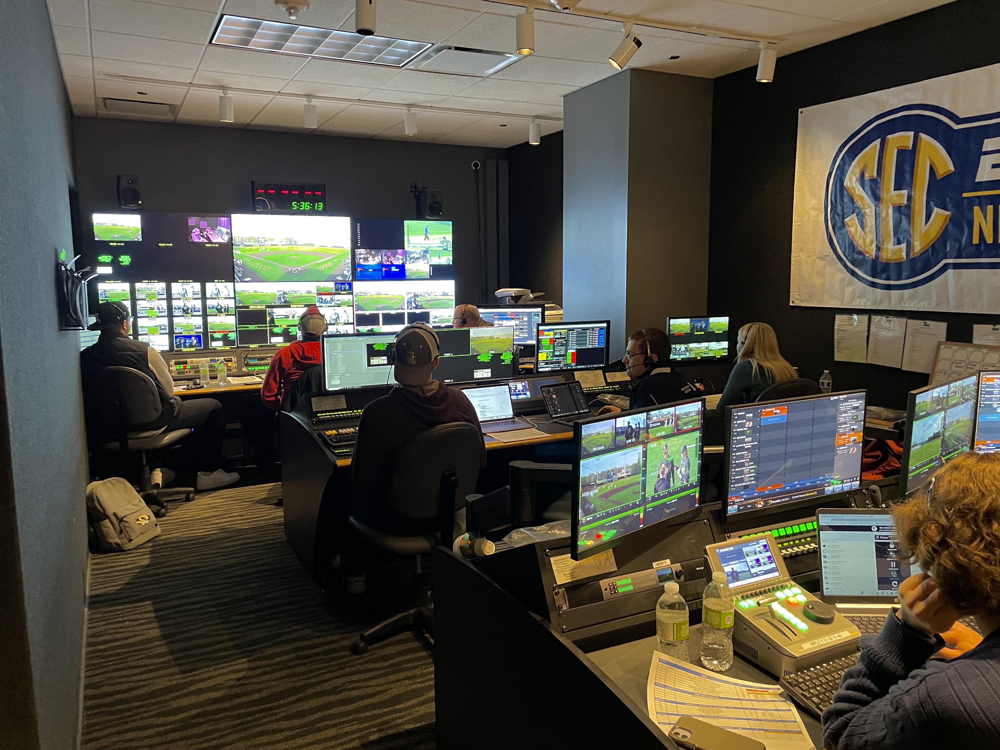
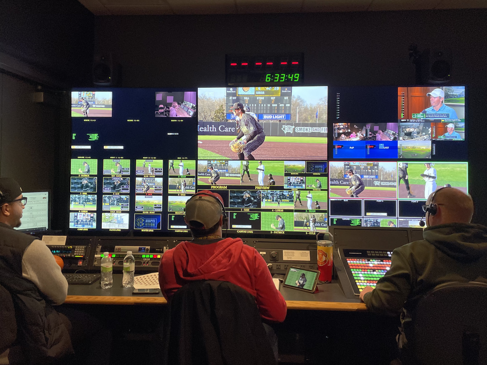
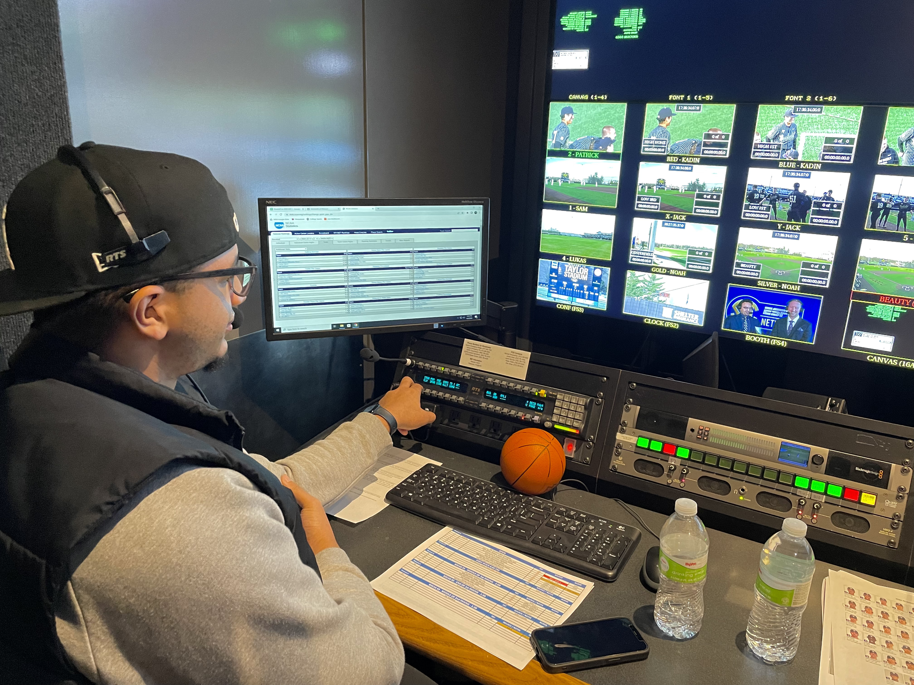
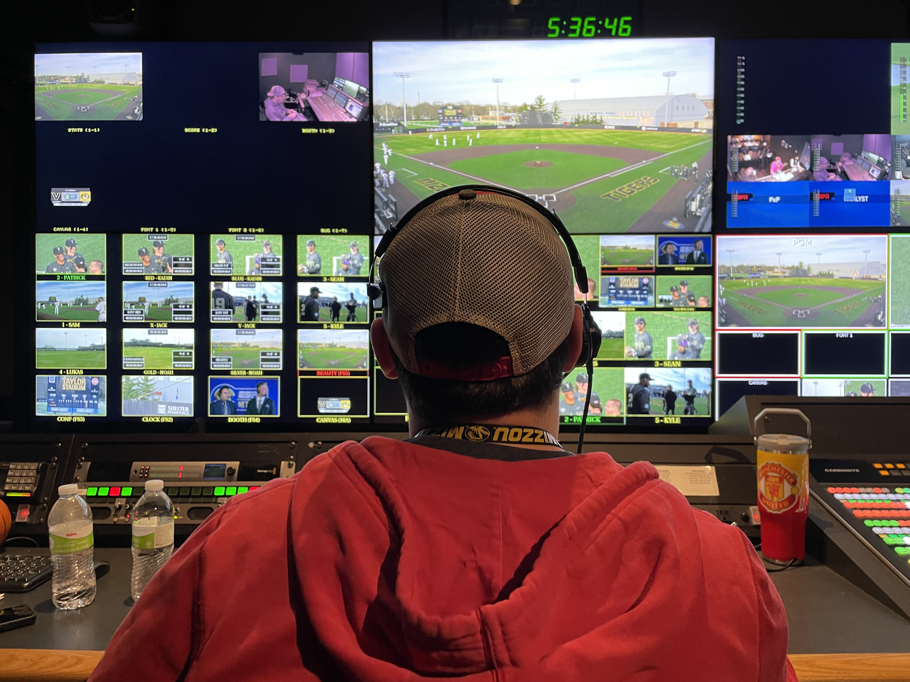
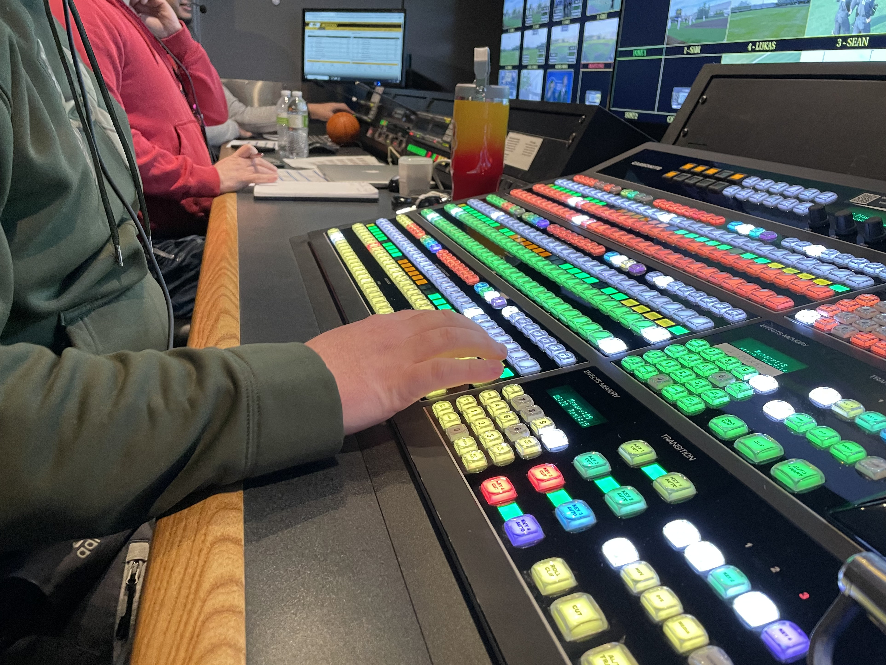
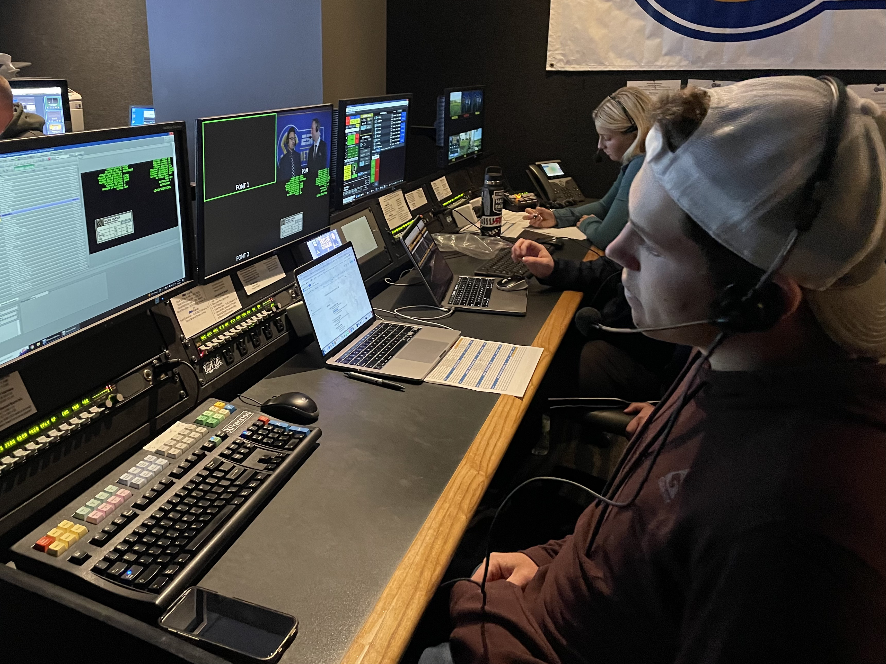
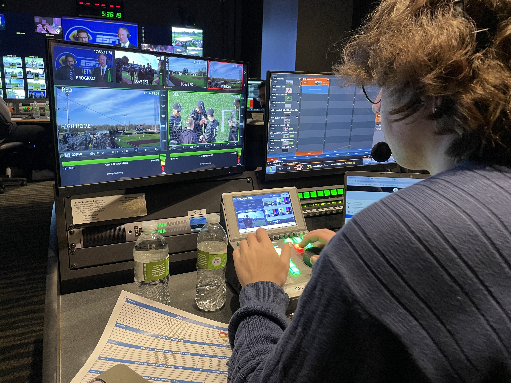

Behind the scenes of the Mizzou Broadcast Operation's Control Room -- preparing to broadcast the Missouri baseball vs Vanderbilt series on SEC Network.

Wide shot of the Mizzou Broadcast Ops Control Room.

The "Front Bench," where the Producer, Director, and Technical Director sit.

Producer, Walter Fields Jr. running through the open with talent via headset.

Director, Jarom Mcliver going over camera assignments pre-game with the camera ops via headset.

Technical, Director, Jordan Alves making sure the board is set up exactly how he wants it.

Students preparing graphics for the teams & players as well as other specialty stats that come off the bug.

Lead Tape Op, Kadin Renn putting together a title card package for the open.